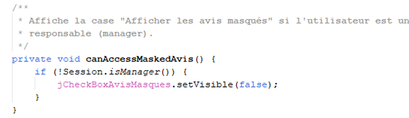
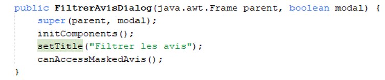

Dans le cadre du filtrage des avis masqués, je me suis tout d’abord rendu dans la classe
FiltrerAvisDialog.java dans laquelle j’ai ajouté la méthode
canAccessMaskedAvis(). Cette méthode permet de vérifier que
l’utilisateur connecté n’est pas un modérateur, afin de restreindre l’accès
aux avis masqués.

J’ai ensuite intégré cette vérification dans le constructeur de la classe, en conditionnant l’affichage de la case à cocher « Afficher uniquement les avis masqués » à l’autorisation d’accès aux avis masqués. Ainsi, seuls les responsables pourront voir et utiliser cette option.

Cette méthode est appelée dans le constructeur de la classe, ce qui permet d’effectuer la vérification dès l’initialisation de la boîte de dialogue. J’ai également modifié le libellé de la case à cocher en ajoutant le mot « uniquement » afin de rendre son fonctionnement plus explicite.
Ensuite, dans la classe ListeAvisPanel.java, j’ai refactorisé les méthodes
appliquerFiltre() et chargerAvis() en les découpant
en plusieurs méthodes afin d’améliorer la lisibilité, la maintenabilité et
la réutilisabilité du code.
initialiserTable() : réinitialise le tableau des avis en vidant son contenu
et en recréant la liste des critiques affichées.
afficherCritiques() : parcourt les critiques, applique les filtres
(statut et date) et affiche les résultats dans le tableau.
correspondStatut() : vérifie si une critique correspond au filtre
(visible ou masquée).
correspondDate() : vérifie si une critique correspond à une date,
une semaine ou une année donnée.
ajouterLigneTable() : ajoute une critique dans le tableau avec
ses informations (date, utilisateur, restaurant, commentaire, statut).
La méthode afficherCritiques() applique successivement les filtres
sur chaque critique. Si une critique correspond aux critères sélectionnés,
elle est ajoutée au tableau ainsi qu’à une liste interne permettant de garantir
la cohérence entre les données affichées et manipulées.
Objectif : vérifier que la case « Afficher uniquement les avis masqués » est accessible uniquement au responsable et que le filtrage fonctionne correctement.
Cas modérateur :
Cas responsable :
Une contrainte technique a été identifiée : l’application nécessite d’être lancée
depuis le répertoire contenant le fichier .env, sans quoi la connexion
échoue. Ce point sera corrigé dans la branche de déploiement.